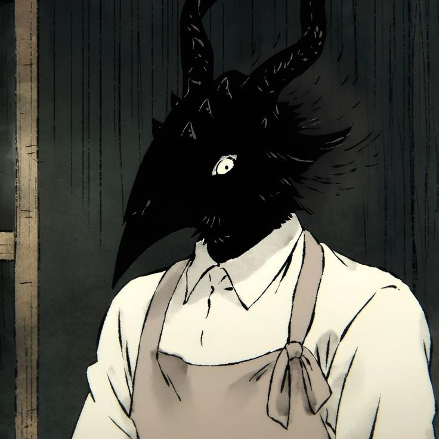
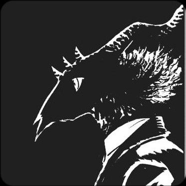
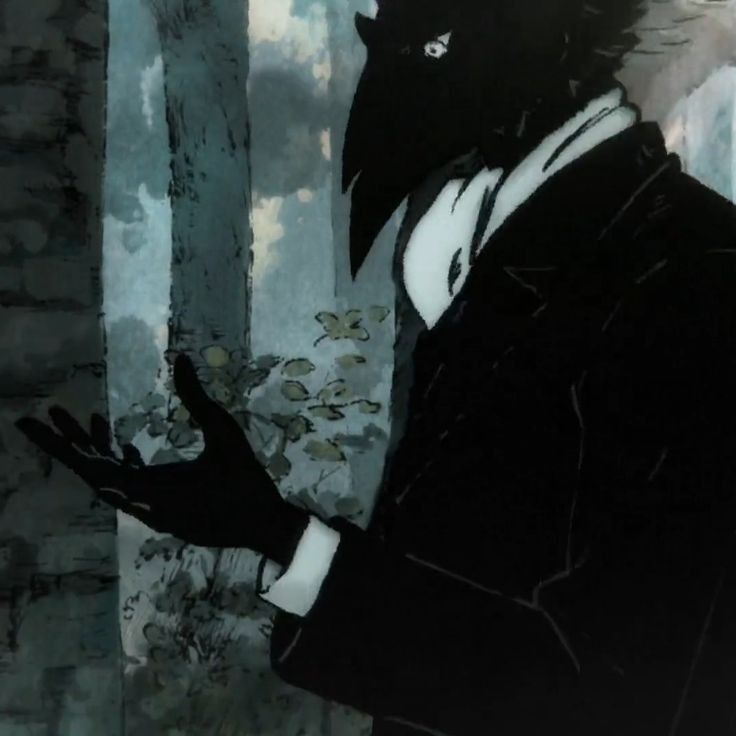
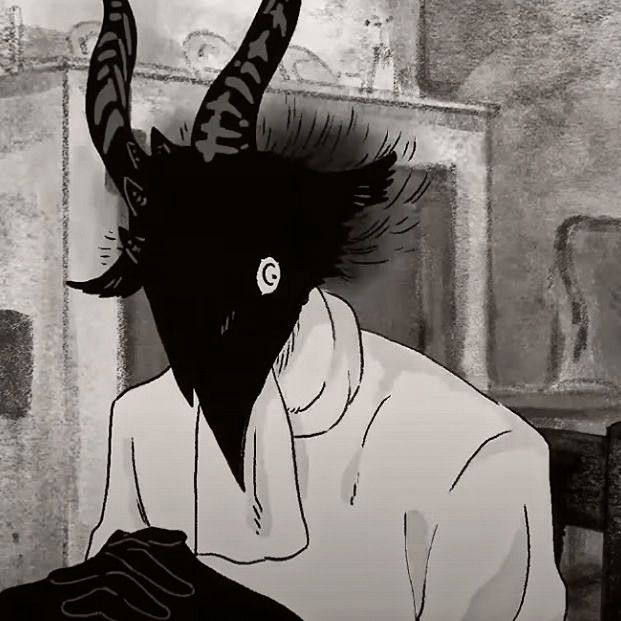
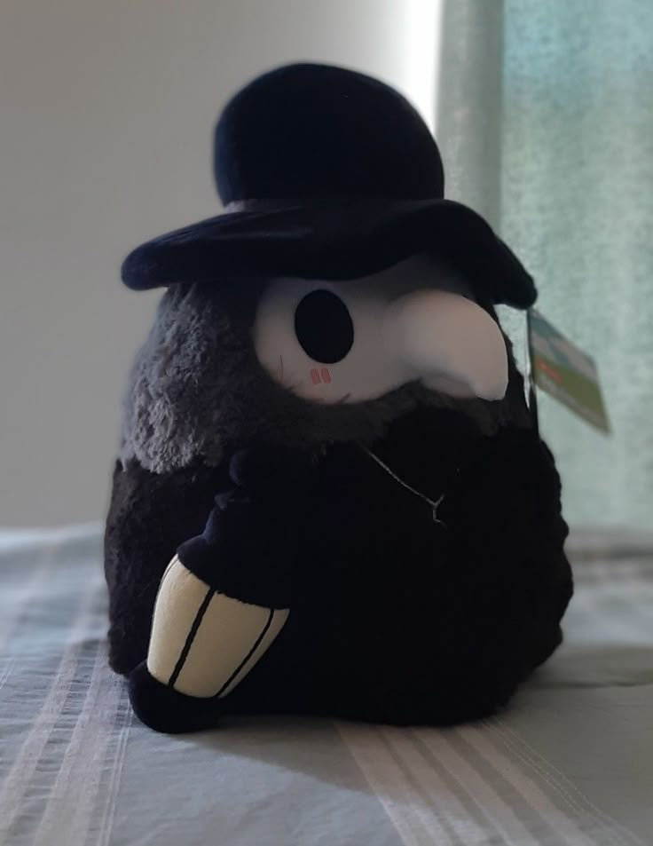
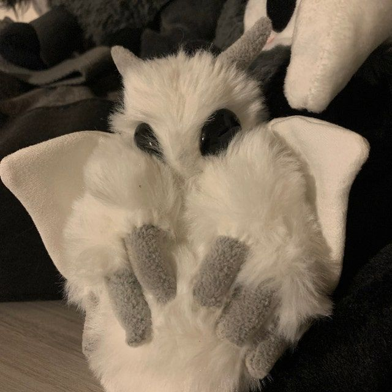
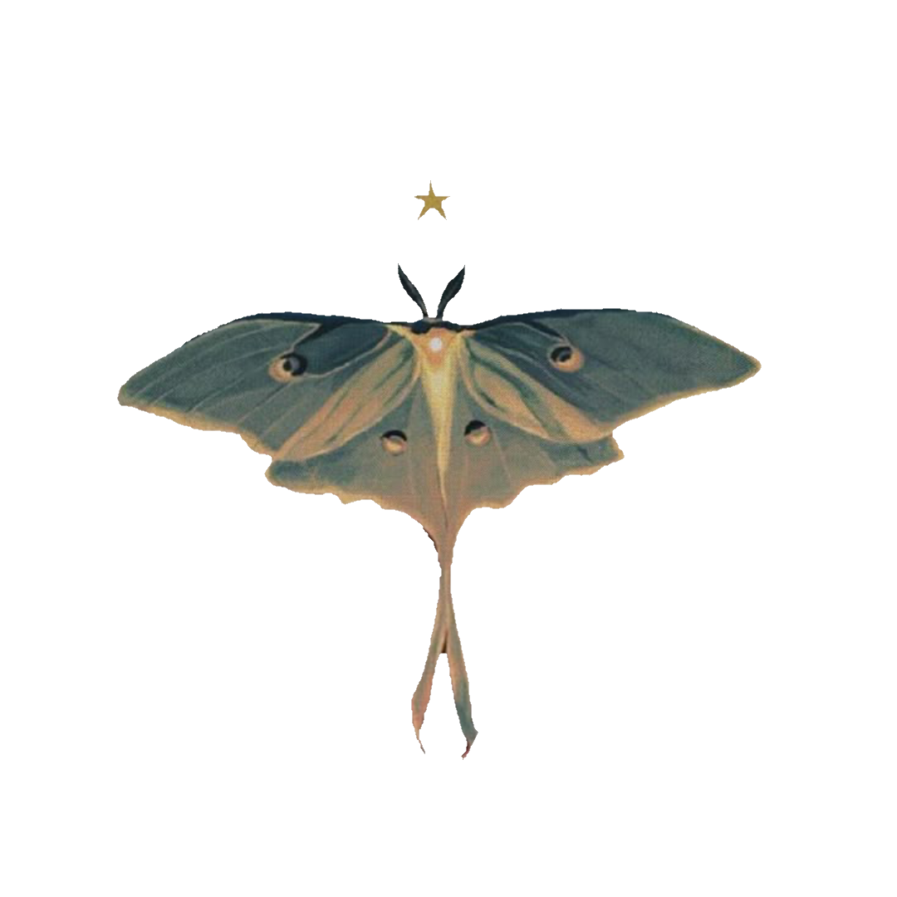
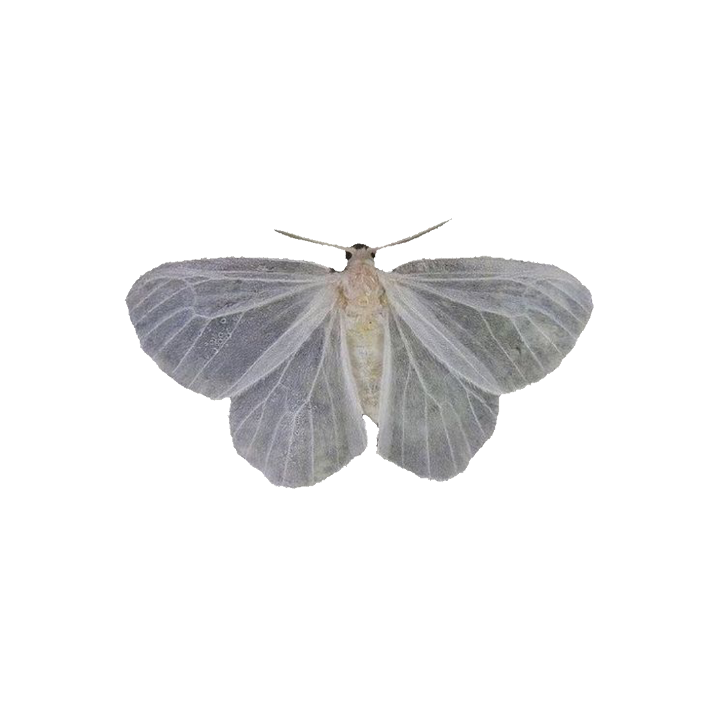

cuando que clase de lectura te
gusta consumir. Es bonito oirte hablar
de cosas que te llamaron la atención.

En general creo que esta paleta de colores
representa bien como se siente hablar contigo
la única razón de esta imagen.

tuve contigo tenía que ver con este planeta.
Desde ese momento decidí que quería hacerte
sentir que tenías un amigo, espero haberlo logrado.
me trae tranquilidad cuando hablo contigo
de ti es uno sobre un pin esmaltado de una polilla.
Esta me recordó a como se veía el pin, al menos
en los colores.
de que serías casi igual a este.
Los cuervos son de los animales más
interesantes a mi parecer
¿Cómo está mi amiwito en esta ocasión especial?

Sé que a lo mejor el día no es exacto,
sin embargo, es una oportunidad para celebrar
¡Vamos a aprovecharla al máximo!

El trabajo duro debe recompensarse y
puedo asegurarte que no existen muchas personas
que se esfuercen tanto como tu.
Toma este detallito como un "Gracias" bien merecido.

Quiero agradecerte por todo lo que haces por nosotros,
no cualquiera intenta ser tan diligente como tu, incluso
cuando eso a veces requiere sacrificios.
A pesar de todo, siempre tienes la disposición para cuidar
al resto, te preocupas por su bienestar y siempre buscas
la
forma de mantenerlos felices.

Pero también las personas necesitan descansar
de vez en cuando, creo que especialmente tu eres
merecedor de un momento para ti, uno donde puedas relajarte.
¿Sabías que en nuestras conversaciones lo que más me
gusta es escucharte hablar sobre las cosas que te
interesan?
Para mi es entrañable oír qué encuentras curioso o
llamativo, también las razones por las cuales le
pusiste atención a algo. Valoro mucho tu opinión.

No sé si alguien más te lo ha dicho pero al
menos en mi caso te considero una persona muy
importante. Eres alguien a quién tengo en gran
estima y tengo un enorme respeto por ti.
También te considero uno de los pocos amigos con
los que siento que puedo ser más abierto y compartir
cosas que usualmente no le diría a nadie más.

Creo que es lindo que en algunas ocasiones te
preocupes por mi. Cuando eso pasa, a mi mente llega
la imagen de este peluchito y no puedo evitar pensar
en qué son un poquito parecidos 🤏
Eres más amable de lo que algunas veces quieres admitir
o te das crédito. No seas muy duro contigo mismo, yo
también me preocupo por ti.

Nunca he sido demasiado bueno con las palabras
cuando se trata de estos temas, también supongo
que aunque lo fuera no creo que existan palabras
para describir lo feliz que estoy de que estés aquí...
Así que pondré esta imagen de una polilla de peluche
en lo que pienso cómo decirlo... Ah, si

Gracias por existir, Josh
Mi vida sería más solitaria y menos
divertida sin ti.
Me alegra mucho poder decir que somos
amigos.

...Y a lo mejor ya te habrás dado cuenta de esto
pero escondí algunas imagenes con algunos mensajitos
por toda la página... ¿Quieres intentar encontrarlos todos?
Espero y te diviertas con algunos de ellos, otros puede y
te traigan recuerdos. Espero poder seguir creando más memorias
contigo este año y los que le siguen a este.
De verdad te quiero y aprecio, Joshua.
Atte.
Tu amigo, Sam
Vi estas y pensé que te gustarían
curiosos sobre polillas, al menos
mayormente.
pueden distinguir con sus ojitos cuando
inicia el día y cuando inicia la noche
oído del mundo... ¿Escucharán los secretos de
todos?
Existen una buena cantidad de polillas
diurnas y algunas son más coloridas que
varias mariposas.
que beben sangre... Curiosamente, algunas clases
de murciélagos también, además de que hay murciélagos
que depredan a las polillas.
¿Estará relacionado?
Me recordó a Sonne y por eso
la pongo aquí.